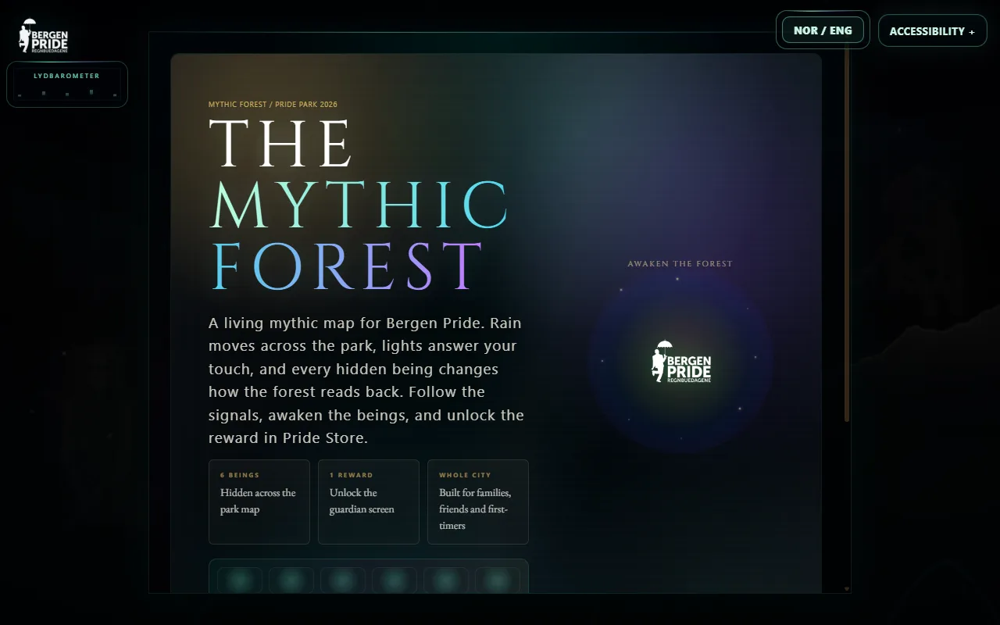
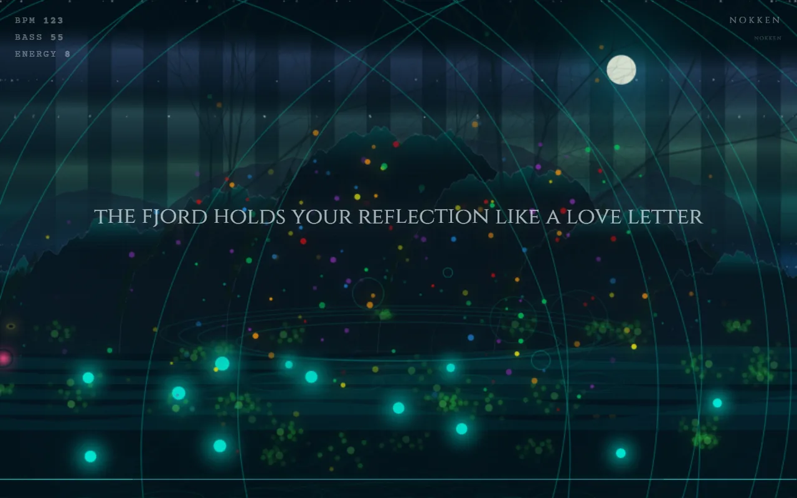
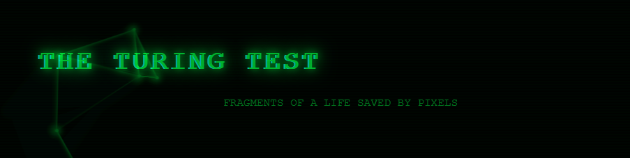

MOUNT MEDIA / SELECTED WORKS
My experience is the starting point.
The form is a choice.
I study how technology enters memory, bodies and public life. Sometimes that becomes a story you can play; sometimes a sound, a shared space or a question for a system.
LATEST WORK / ELECTRONIC LITERATURE
What the Roots Keep
A five-part work of electronic literature about connection, distance, family inheritance and remaining open after a relationship changes. Hold a flower above dark water, then follow its roots through rooms shaped by touch, waiting, light, sound and release.
Read and play What the Roots Keep ↗TALK / CDN EQUINOX 2026 / MACHINE VISION
Me, Myself and A.I.
What happens when a system confidently represents us incorrectly? Language models invented Norwegian queer organisations and crisis contacts. An image generator read music genre as gender in my own face. Then The Detector, a live classifier I built, sorted the room with zero percent unsure, and 17 of 54 people told it that it was wrong.
Read the Equinox post: The room has been sorted ↗PLAYABLE RESEARCH / MOUNT MEDIA
Trail Mix
Play the hike, then come and walk it. A moving DJ set from Sandviken to Fløyen, with performances along the route.
Play Trail Mix ↗AUDIOVISUAL SYSTEM / SALT OSLO
Fjordtatt
The Oslo continuation of Bergtatt: a lesbian sauna ritual built around heat, water, breath, condensation and chosen family.
Explore Fjordtatt ↗
GAMES / FOLKLORE / PUBLIC SPACE
Pride Park
A browser game made for Bergen Pride, connecting Norwegian folklore, queer belonging and movement through a real park.
See the playable project ↗The published main HTML file contains 21,292 source lines (19,720 non-empty), including code, comments and content.

PLACE / SOUND / LIVE VISUALS
Bergtatt
Bergen’s landscape, nightlife and queer folklore become a sound-reactive visual environment. A way of translating lived surroundings into colour, movement and atmosphere.
Explore Bergtatt ↗
ELECTRONIC LITERATURE / MEMORY / DIGITAL IDENTITY
The Turing Test
Personal experience, memory and being misread by systems become an interactive narrative. The reader encounters the question through choices.
Enter the work ↗MUSIC / ESSAYS / MOVING IMAGE
The universe
Music, essays and moving image, made under the name Mount Media, alongside the games, installations and live visuals on this page.
See all projects ↗RESEARCH / COMMUNITY / DIGITAL CULTURE
Connections beyond the screen
My work includes research with CDN / SurvivingSOGICE, digital strategy with Bergen Pride and activism with FRI Vestland. These experiences inform the questions I bring into making.
Read about my practice ↗
INGRID ORMEVIK / COMMUNICATION & CULTURE
Social media.
Since 2018.
I started with Queer Fashion of Scandinavia. Since 2023, I have been responsible for Bergen Pride’s social media and content production.
DIGITAL MEDIA STRATEGIST
Bergen Pride
The festival’s social media and content production, with responsibility for coordinating volunteer photographers during festival week.
Strategy / Content / Photography coordination
FOUNDER
Queer Fashion
of Scandinavia
A digital platform for queer representation. I founded and ran it, working with consent-based documentation of people and their self-expression.
Representation / Publishing / Consent
Before I studied digital culture, I was already working with its questions: who appears in the feed, how we frame each other, and what it means to be visible as a queer person. I bring that experience into my research and the works I make.
Full experience & roles ↗